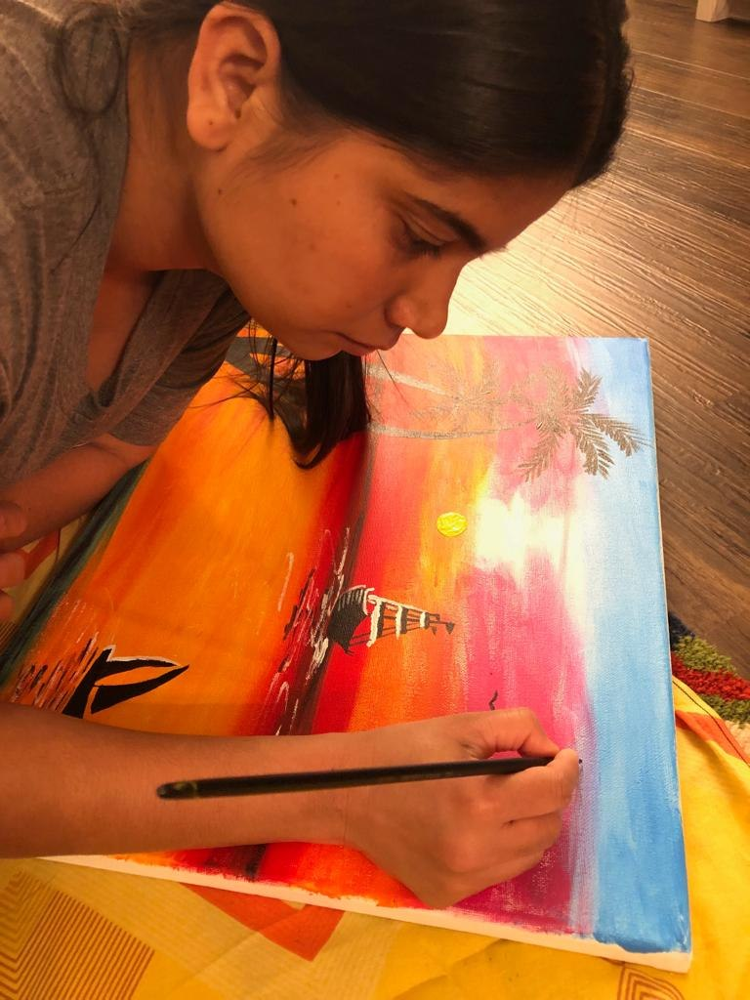
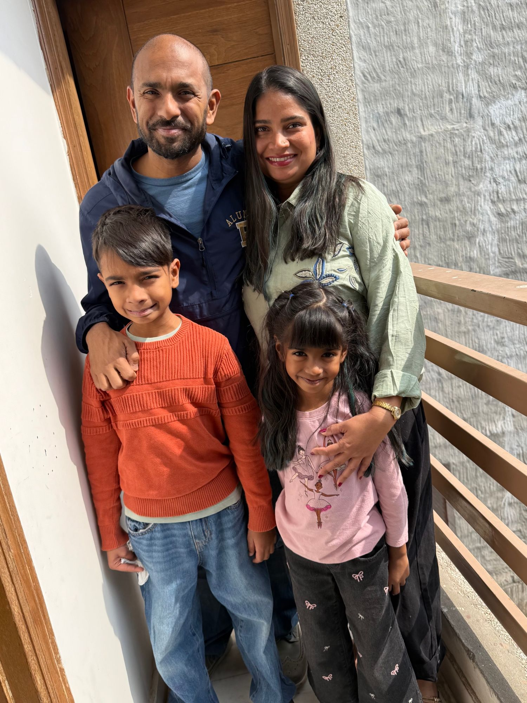

Nargis Salmani Forber-Pratt was born in a small village in Uttar Pradesh, India, one of eight children.
Her family had very little money. What they had instead was each other: a crowded house, shared meals stretched to feed everyone, and a lot of laughter. Nargis will tell you the joy was real. It didn't wait for things to get easier.
When her family needed her, she left school to help support them. Most people would call that the end of a story. For Nargis it was the beginning of one. She went on to lead her own organization, Child Life Care Society, teaching 100 children a day and helping bridge non-school-going children into government schools.
In 2013 she met Ian at a child protection conference in Delhi, and they married in 2014. The family moved to St. Louis in 2018. Since then, Nargis has learned a new language and a new way of life, and she's now finishing her high school diploma in evening classes, after work, because she doesn't give up.
Mashallah Arts is the newest chapter. It brings together the things that have always carried her: her faith, her family, feeding people, and making beautiful things with her hands.

“जब मैं कुछ बनाती हूँ, तो मुझे लगता है जैसे मैं सचमुच पूरी दुनिया से जुड़ रही हूँ — अपने से भी कहीं बड़ी किसी चीज़ से।”
“When I am creating, I feel like I'm literally connecting with the world. With something bigger than myself.”
— Nargis

Mashallah Arts is Nargis's work. But it's cooked, tasted, packed, and cheered on by all four of us.
Makes the candles, blends the tea, paints the paintings, and runs the show.
Her husband, a social worker and intercountry adoptee born in Kolkata, and CEO of The Ties Foundation. At Mashallah Arts he's mostly the chief tea-taster and box-carrier.
“I love that she thinks outside of the box and is creative.”
“I like when Mumma makes candles and art.”
We're an Indian-American family, a two-culture family, and a lot of the time a very loud family. This shop is our front door, and it's open.